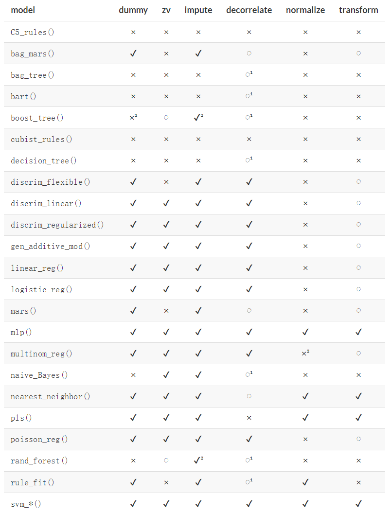

2 临床预测模型建立的一般步骤
很多高分文献中都有涉及如何建立一个预测模型，比如：
- Strandberg R, Jepsen P, Hagström H. Developing and validating clinical prediction models in hepatology—An overview for clinicians[J]. Journal of Hepatology, 2024: S0168-8278(24)00213–7. DOI:10.1016/j.jhep.2024.03.030.
- Steyerberg E W, Vergouwe Y. Towards better clinical prediction models: seven steps for development and an ABCD for validation[J]. European Heart Journal, 2014, 35(29): 1925–1931. DOI:10.1093/eurheartj/ehu207.
BMJ也出过多篇高分文章指导临床预测模型的建立，比如：
- Efthimiou O, Seo M, Chalkou K, Debray T, Egger M, Salanti G. Developing clinical prediction models: a step-by-step guide. BMJ. 2024 Sep 3;386:e078276. doi: 10.1136/bmj-2023-078276. PMID: 39227063; PMCID: PMC11369751.
英文的看不懂看中文的也行：
- 谷鸿秋,王俊峰,章仲恒,等.临床预测模型:模型的建立[J].中国循证心血管医学杂志,2019,11(01):14-16+23.
如果是从写代码的顺序的角度来说，大致可以分为以下几个步骤：
- 明确研究目的
- 探索性数据分析
- 数据预处理和变量筛选
- 建立模型
- 评价模型
- 结果报告和写作
2.1 明确研究目的
首先要明确你的研究目的。
- 你是要预测某个患者在10年后的生存状态吗？
- 你还是要判断某个病理标本是tumor还是normal？
- 你是要计算患者在使用某个药物后的空腹血糖水平吗？
- 你还是要预测心梗患者的死亡风险？
不同的研究目的需要使用不同的模型，对应的模型评价方法、预处理方法、模型比较方法都不一样，不能生搬硬套。
以上四个问题其实可以分为三类，刚好对应着模型的三种用途：
- 分类
- 回归
- 生存分析
如果你的结果变量（或者叫应变量、因变量）是数值型的，比如血糖、血压、血钾这种，那么你需要选择一个可以做回归分析的模型（大部分机器学习方法都是既支持回归也支持分类），此时你选择逻辑回归必然是不行的。
如果你的结果变量是分类型的，比如生存/死亡，tumor/normal，治愈/有效/无效，患病/不患病，那么你需要选择一个可以做分类分析的模型。
以上两种类型的模型通常会被大家称为诊断模型。
如果你的数据涉及到时间问题，那么你需要选择一个可以做生存分析的模型。这种模型通常被大家称为预后模型。
2.2 探索数据
探索数据的过程非常重要，充分了解你的数据，这个过程有个专业的名词叫**探索性数据分析（exploratory-data-analysis，EDA），主要包括以下几个方面：
- 共有多少行？多少列？
- 哪些是自变量，哪些是因变量？
- 每个变量的含义是什么？
- 有没有缺失值？离群值？异常值？需不需要处理？
- 有没有偏态分布？需不需要处理？
- 每个变量是数值型还是分类型？需要转换吗？
- 各个变量的单位是否需要转换？需要归一化吗？
- 各个变量之间有没有相关性？共线性？零方差？需要处理吗？
- ……
每一个问题都很重要，都要搞清楚！不同的模型对数据的要求是不一样的，有的要求不能有缺失值，有的模型要求数据必须归一化等等，这些问题对开发一个准确的、高性能的模型是必须的。
有些人连自己的数据是啥都不了解，就开始生搬硬套代码，最后得到shit一样的结果，然后到处问：为什么我的模型这么垃圾？滑稽。
2.3 数据预处理和变量筛选
探索完你的数据之后，你就要根据自己选择的模型进行相应的预处理，而且不同的预处理步骤有一定的顺序。
这一步需要你有一定的专业知识、统计学知识、机器学习知识，其实很难，大家可以遇到了具体问题具体搜索。
下面是对不同模型推荐的预处理步骤(推荐，不是必需一定要按这个来！！)：

名词解释：
dummy：对分类变量进行哑变量处理，或者进行其他重编码zv：去除方差为0（zero-variance）或者近似为0的变量impute：对缺失值进行插补decorrelate：处理有共线性或者高度相关的变量normalize：对数据进行标准化transform：对变量进行转换，比如log、取对数、分箱等
变量选择(又叫特征选择,feature-selection)，是机器学习和统计建模领域非常重要的问题，到底哪些变量是有用的，哪些是不重要的，可以删除的，怎么选才能提高模型表现，理论其实非常复杂。
比如有个数据共有26个自变量，可能其中只有几个是重要的，其他的有没有都不重要或者对模型影响不大，这时候就要把不重要的变量筛掉。
在传统的临床预测模型中，比较常见的变量筛选方法有：
- 先单因素后多因素
- 最优子集（全子集回归）
- 逐步选择法
- lasso回归筛选变量
- 随机森林筛选变量
- …
2.4 建立模型
这一步其实是大家遇到的最多的一步，可能也是大多数人的第一步。这里的“建立模型”其实是狭义的，就是单指“在训练集拟合模型”这一步，广义的“建立模型”包括本文所说的所有步骤。
这一步涉及到的主要知识点是各种重抽样方法的选择，比如boostrap（自助法，也有人翻译成拔靴法）、交叉验证、嵌套重抽样等。
但是写代码时其实就是1行代码而已，没有难度，需要大家理解每一种重抽样方法。
2.5 评价模型
这一步其实是最复杂的，因为从第二步（探索数据）到这一步其实是一个不断重复循环的过程，可能你建立一个模型之后发现这个模型表现很烂，那么你需要重新审视之前的每一个过程，因为每一步都会对模型表现产生影响，你就需要不断对之前的步骤进行调整，也就是不断地重复之前的过程。通常你可能需要重复好多次之后才能得到满意的结果。
而且模型的评价现在需要在不同的数据集中分别评价，比如：训练集、测试集、外部验证集等。有时候你的训练集模型表现很好但是测试集不一定好，那你是不是得找原因？如果你没有超级强大的知识储备，对你来说最简单的可行方案就是挨个试（对高手来说这一步也必不可少，只是写论文不需要写这个过程）。
除此之外，对于不同的研究目的和不同的模型需要选择不同的评价指标。对于分类问题你需要选择能够评价分类问题的指标，对于回归问题你需要选能够择评价回归问题的指标，对于生存问题你需要选择能够评价生存问题的指标。不能混用，不然必报错！
同样是分类问题，研究目的不同使用的指标也不一样，比如：你是想获得更大的敏感度还是更大的特异度？换个说法就是：你想要更高的误诊率还是更大的漏诊率？类别的不平衡对某些指标影响很大，你的研究能忽略这种问题吗？不能的话就要选择适合评价类不平衡数据的指标。诸如此类的问题，都和指标选择有关。
当你通过一通操作确定了最终的模型之后，你就可以画个列线图展示你的模型了，除此之外还可以根据列线图得分进行分组，做生存分析、亚组分析等。
如果你还想更加高大上一点，你还可以用shiny做个网页计算器。
2.6 结果报告和写作
全都搞定之后就可以写文章了，不会写的话就pubmed关键词搜一搜，模仿一下即可。除此之外还有一个TRIPOD指南，上面也有建议你需要写哪些东西。
本合集并不是按照以上顺序编排的，本合集是模块化的，把这么多步骤分成不同的部分，每个部分都做详细介绍，方便大家学习。